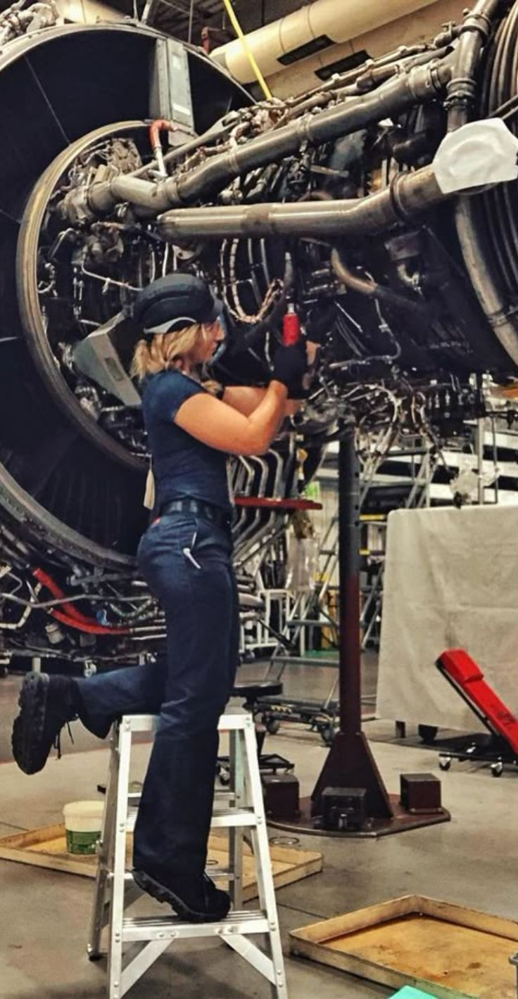
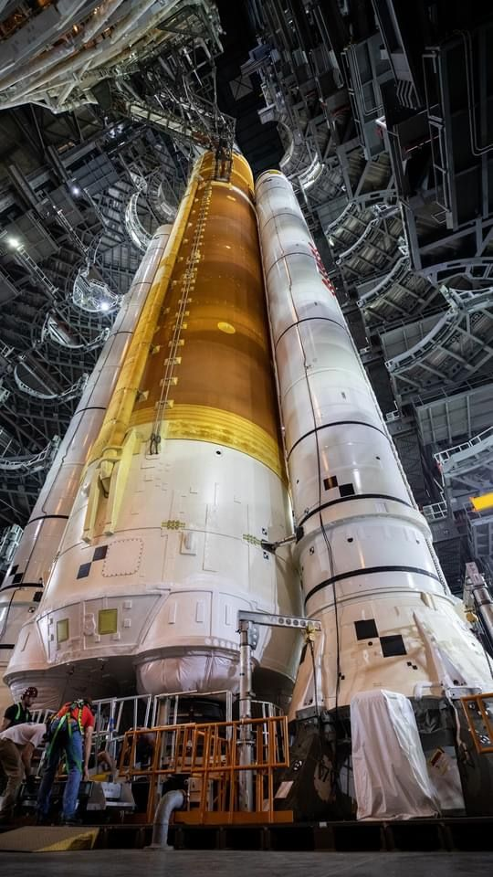
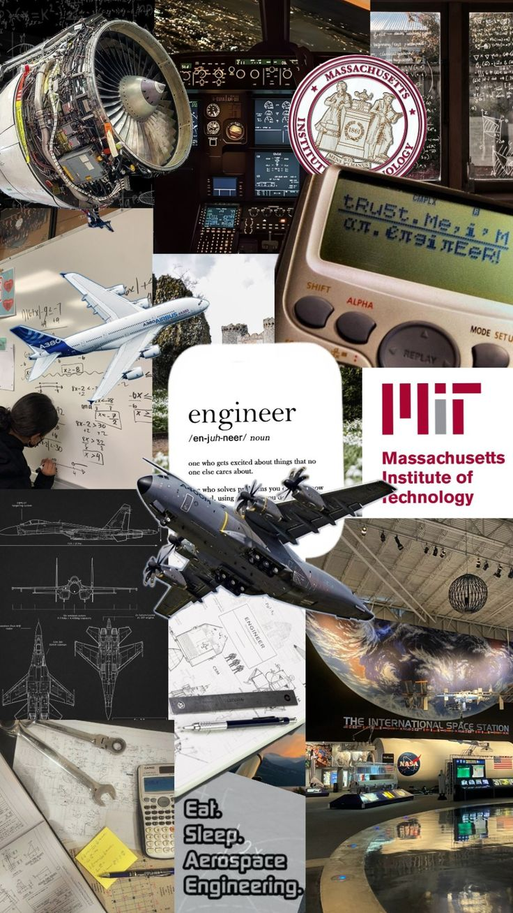

Read along to find out what all the hype is about.



Aerospace engineering is a branch of engineering focused on the design, development, testing, and production of aircraft, spacecraft, satellites, and missiles. It is divided into aeronautical engineering (aircraft within Earth’s atmosphere) and astronautical engineering (spacecraft operating beyond it). Students study subjects like physics, mathematics, thermodynamics, fluid dynamics, propulsion systems, control systems, and materials science. These help engineers understand how flight works, how rockets generate thrust, and how vehicles survive extreme conditions. Aerospace engineers work in industries such as aviation, space exploration, defense, and satellite communications. They may design drones, improve fuel efficiency, develop navigation systems, or work on space missions. Although it is considered one of the most challenging and expensive engineering fields, it offers opportunities to work on advanced technologies and global projects. With the growth of private space companies and satellite technology, aerospace engineering continues to be a highly innovative and future-focused career.